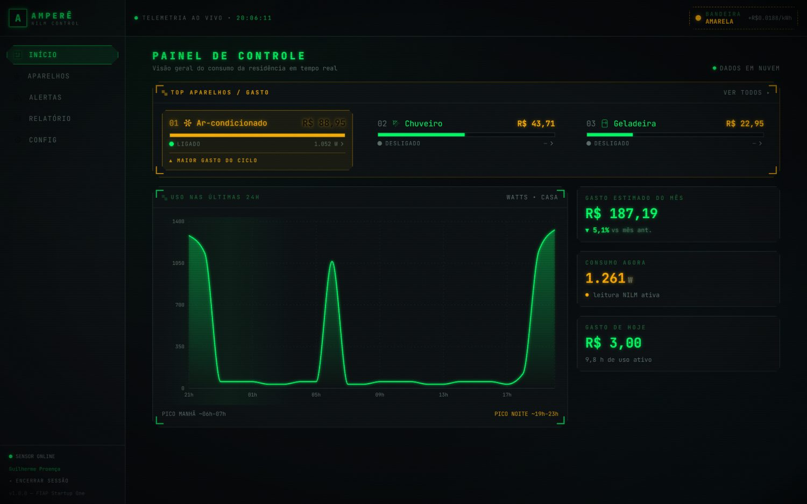
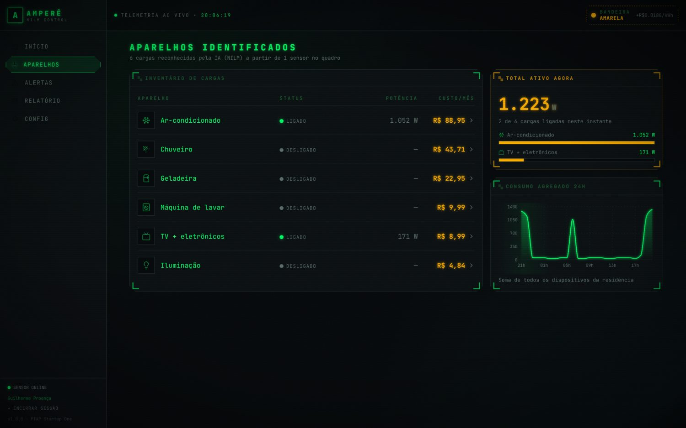
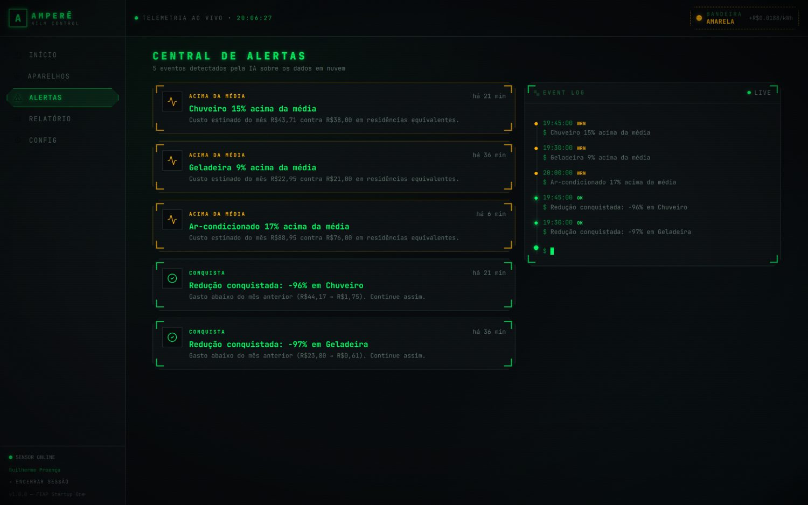
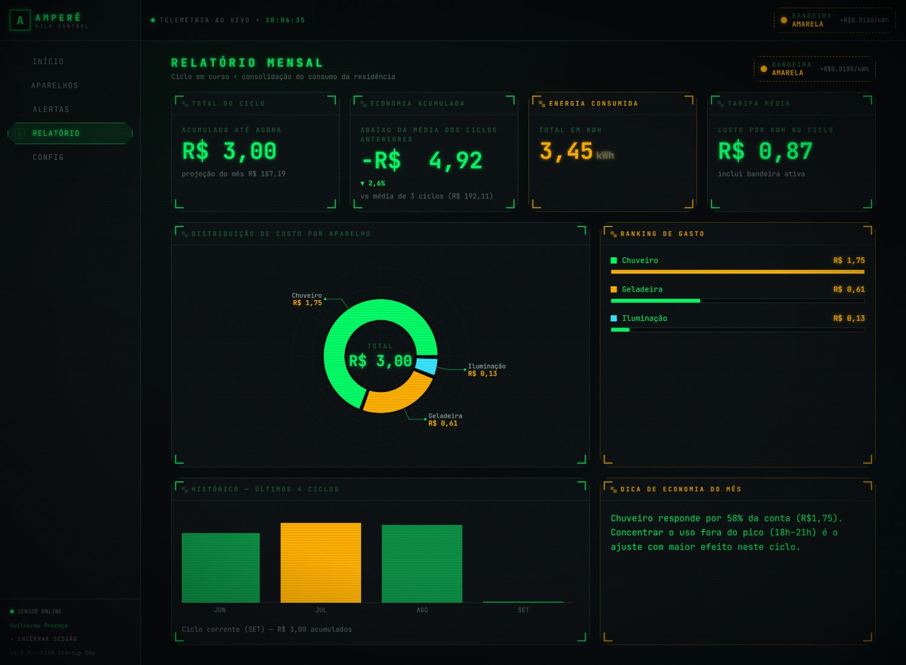
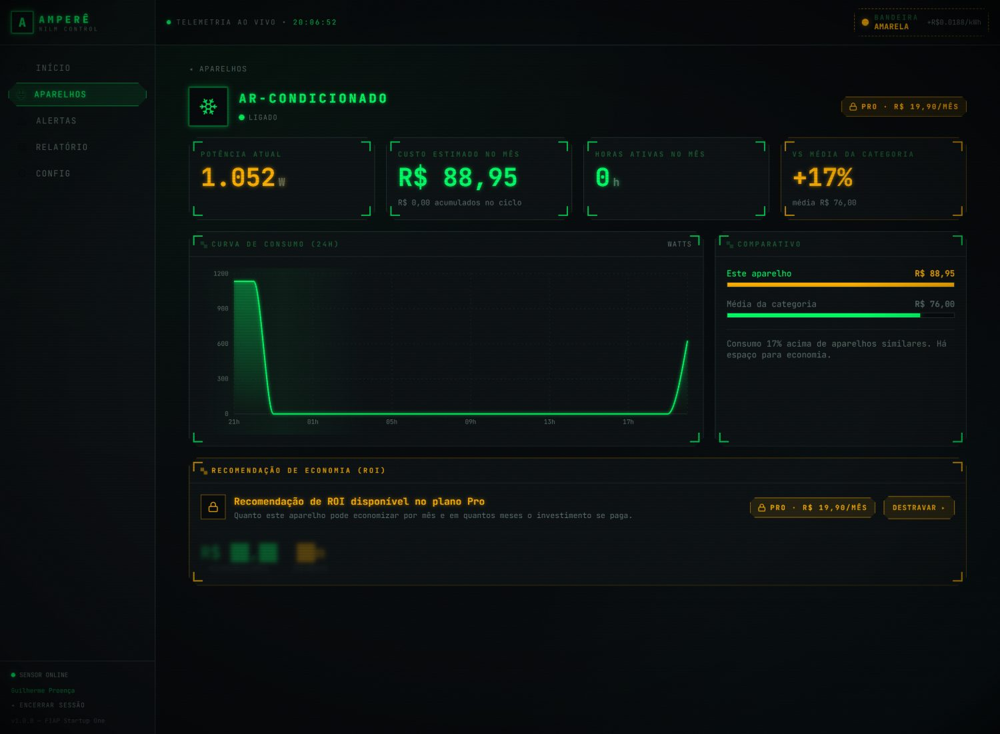
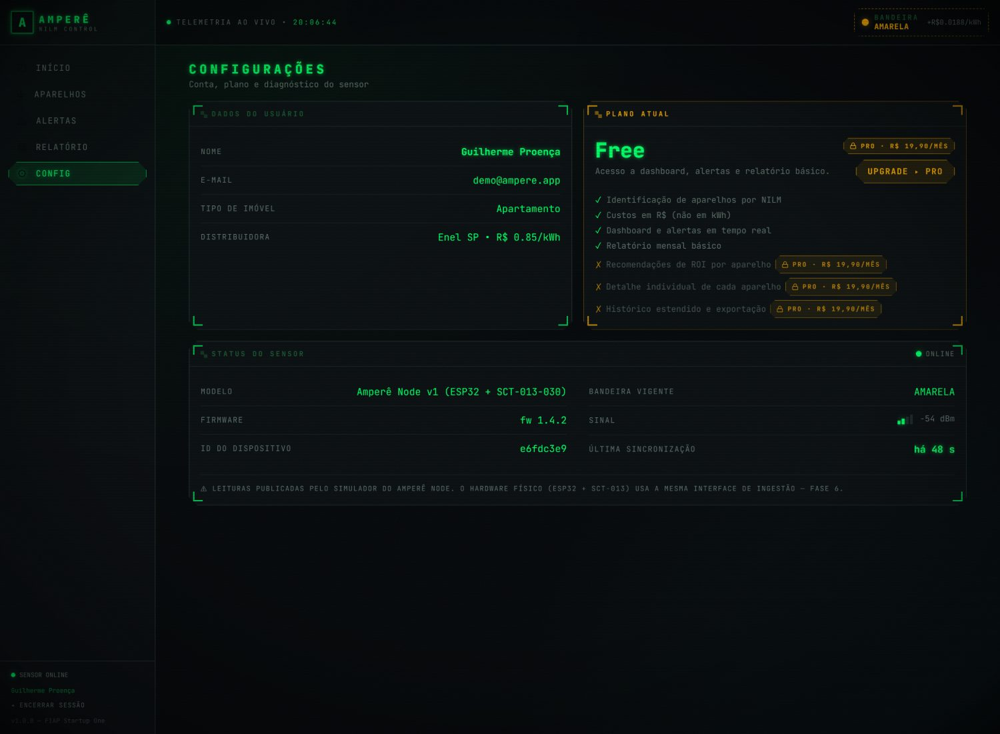

A entrega anterior (CP4, "É Hora de Prototipar") foi um protótipo de alta
fidelidade em código real: React + Vite + TypeScript + Tailwind, seis telas navegáveis
com a estética HUD de cockpit. Toda a informação exibida vinha de um único arquivo,
src/data/mock.ts, com 261 linhas de dados fixos.
Aquilo provou a interface e a proposta de valor, mas não provava o produto: não havia back-end, banco, autenticação nem ingestão de dados. A tela mostrava R$ 187 porque alguém tinha digitado 187.
Nesta fase o Amperê passou de protótipo para MVP funcional. O número que aparece na tela agora é calculado, a partir de leituras gravadas em um banco em nuvem, agregadas por consultas SQL e atribuídas a aparelhos por um algoritmo de desagregação.
| Camada | CP4 | CP5 |
|---|---|---|
| Dados | Arquivo local mock.ts | PostgreSQL em nuvem (Supabase), 8 migrations versionadas |
| Back-end | Inexistente | Node + Express + TypeScript, 11 rotas, validação com Zod |
| Autenticação | Inexistente | Cadastro e login reais (Supabase Auth), sessão persistida |
| Ingestão | Inexistente | POST /ingest/readings, autenticado por chave de dispositivo |
| NILM | Curvas desenhadas à mão | Detector de degraus sobre a série agregada, 93,6% de recall |
| Dispositivo | Ilustração | Simulador publicando no mesmo endpoint previsto para o ESP32 |
| Front-end | Consumia o mock | Consome a API; o mock virou modo offline opcional |
| Segurança | Não se aplicava | RLS por usuário em todas as tabelas |
Banco de dados em nuvem. A modelagem dimensional definida no CP3 saiu do papel: seis tabelas de dimensão e duas de fato, em Star Schema, no PostgreSQL do Supabase. Índices em todas as chaves estrangeiras e nas colunas temporais. Row Level Security habilitada em todas as tabelas, com políticas que restringem cada usuário aos próprios dados. Tudo entregue como migration versionada, não como comando avulso no editor SQL.
Camada de back-end de verdade. O front não fala com o banco. Entre eles existe uma API em Node + Express que concentra a regra de negócio: o motor NILM, o cálculo de tarifa e bandeira, a estimativa de fechamento do mês e as regras de plano. Essa escolha foi deliberada — o Supabase expõe PostgREST e daria para o navegador consultar o banco direto, mas isso significaria mandar a lógica de precificação junto com o bundle e confiar no cliente para calcular quanto o usuário deve pagar.
Motor NILM. O sensor mede apenas o total da casa. Quando uma carga liga,
a potência agregada dá um salto do tamanho dessa carga; quando desliga, cai o mesmo tanto.
O detector casa o tamanho do degrau com a faixa de potência conhecida de cada aparelho e
atribui o evento — sem precisar de um sensor por tomada. A implementação fica isolada atrás
de uma interface (DetectorNILM), para que a troca por um modelo treinado na
Fase 6 não toque em rota, serviço nem schema.
Simulador do dispositivo. O hardware físico ainda não foi montado. O simulador publica leituras no mesmo endpoint, no mesmo formato e com a mesma autenticação previstos para o firmware do ESP32 + SCT-013-030. Quando a placa existir, ela substitui o script sem alteração no back-end.
90 dias de histórico. O banco foi populado com granularidade de 15 minutos — 8.640 leituras agregadas e cerca de 4.500 eventos de aparelho — reproduzindo os valores validados nas pesquisas de campo das fases anteriores.
npm run check:perfil
reproduz a matemática do painel e compara com as âncoras levantadas em campo. Resultado da
última execução: ar-condicionado R$ 89,00 · chuveiro R$ 42,00 ·
geladeira R$ 22,97 · máquina de lavar R$ 10,00 · TV R$ 9,00 ·
iluminação R$ 5,00 · total do mês R$ 187,04 (alvo R$ 187) ·
consumo típico no pico 1.289 W (mediana) e 1.380 W (p75), contra a âncora de
1.340 W.
O teste com três personas realizado no CP4 apontou três problemas que ficaram pendentes naquela entrega. Os três estão implementados:
Vale registrar que a maior parte dos defeitos desta fase só apareceu quando o sistema passou a rodar de verdade contra o banco em nuvem — nenhum deles era detectável em compilação ou em revisão de código.
| Defeito | Efeito visível |
|---|---|
| Fuso horário nas agregações | dim_tempo guarda a hora em UTC e o eixo do gráfico é rotulado em horário de Brasília: a curva de 24h saía deslocada em 3 horas, com o pico das 20h aparecendo às 23h. |
| Curva do aparelho sem sentido físico | A potência média por hora era calculada como média × contagem de eventos ÷ 4. Como os eventos são esparsos, um ar-condicionado de 1.052 W aparecia no gráfico com 270 W. |
| Bases misturadas no painel | O total do mês era estimado e o custo por aparelho vinha acumulado. Os números da tela não fechavam entre si. |
| Ingestão não idempotente | Reprocessar uma janela fazia o NILM redetectar os mesmos degraus. Rodar o modo batch duas vezes levou a máquina de lavar de R$ 9,58 para R$ 13,97. |
| Estimativa quebrava na virada do mês | A projeção extrapolava linearmente o mês corrente. No dia 1º às 20h o multiplicador passa de 36×, e uma única noite decidia a conta do mês inteiro. |
| Alerta de "sem leitura" com limiar fixo | Um silêncio de 15 horas é normal para o ar-condicionado e crítico para a geladeira. O limiar passou a ser relativo ao ritmo de cada aparelho. |
Núcleo: famílias de classe média em apartamento ou casa nas capitais e regiões metropolitanas, com conta de luz entre R$ 150 e R$ 400 por mês, que já tentaram economizar energia mas não sabem onde está o gasto. A conta chega uma vez por mês, fechada, com um único número — não há como agir sobre ela.
Primeiros adotantes: o perfil técnico-curioso — quem já tem alguma automação em casa e gosta de ver dado. O teste de usabilidade do CP4 deu uma evidência concreta disso: os participantes de perfil técnico ignoravam o ranking resumido e iam direto para o inventário completo de cargas. É um público que quer profundidade, e que serve de porta de entrada por gerar conteúdo e indicação.
Fora do escopo inicial: comércio e indústria, que exigem medição trifásica e outra proposta comercial.
"Descubra quanto cada aparelho custa na sua conta de luz — com um sensor só, sem obra e sem trocar tomada."
Três decisões sustentam essa promessa:
| Canal | Papel | Momento |
|---|---|---|
| Instagram / Meta Ads | Aquisição paga, com criativo mostrando o painel identificando o chuveiro | Mês 1 |
| Conteúdo (YouTube / TikTok) | Educação sobre onde o gasto se esconde; tráfego orgânico de custo decrescente | Mês 1 |
| Marketplaces (Mercado Livre, Amazon) | Venda do Amperê Node onde já existe demanda por medidores | Mês 3 |
| Eletricistas e lojas de material elétrico | Indicação no momento da instalação, comissionada | Mês 4 |
| Indicação de clientes | Quem economiza mostra a conta; canal de menor custo | Mês 3 |
Modelo híbrido: hardware com receita única e software por assinatura.
| Item | Preço | Conteúdo |
|---|---|---|
| Amperê Node (ESP32 + SCT-013-030) | R$ 199,00 | Receita única, na aquisição |
| Plano Free | R$ 0,00 | Identificação de aparelhos, custos em R$, dashboard, alertas e relatório mensal |
| Plano Pro | R$ 19,90/mês | Recomendações de ROI por aparelho, detalhe individual, histórico estendido e exportação |
O Free não é isca vazia: entrega o diagnóstico completo, que é o que cria o hábito de abrir o app. O Pro cobra pela prescrição — quanto cada troca economiza e em quantos meses se paga. Promoção de lançamento: três meses de Pro incluídos na compra do Node, para o usuário conhecer o recurso antes de decidir.
A âncora de preço é o próprio produto: se a conta média do segmento é R$ 187 e o Amperê aponta economia de 15% a 30% no maior ofensor, R$ 19,90 se paga com folga. Esse é o argumento comercial central.
| Métrica | O que responde | Meta inicial |
|---|---|---|
| Ativação em 48h | % dos compradores que instalam e veem o primeiro aparelho identificado | ≥ 70% |
| Conversão Free → Pro | O diagnóstico convence a pagar pela prescrição? | ≥ 12% |
| Churn mensal | O valor se sustenta depois da novidade? | ≤ 4% |
| CAC por canal | Qual canal escala sem encarecer | ≤ R$ 145 |
| LTV / CAC | Saúde da unidade econômica | ≥ 3,0× |
| Economia média gerada | Métrica de valor: R$/mês que o cliente de fato reduziu | ≥ R$ 20 |
| Recall do NILM | Confiabilidade técnica da identificação | ≥ 90% |
| Premissa | Valor | Base / como validar |
|---|---|---|
| Preço do Amperê Node | R$ 199,00 | Comparáveis de medidores residenciais no varejo brasileiro. Validar com teste de preço. |
| Custo do Node (BOM, montagem, embalagem, frete) | R$ 118,00 | Estimativa de componentes. Validar com cotação e lote mínimo. |
| Taxa do meio de pagamento | 3,99% + R$ 0,39 | Faixa praticada por gateways no Brasil para recorrência. |
| Infraestrutura por assinante | R$ 0,40/mês | 2.880 leituras/mês por usuário; extrapolação do consumo medido no MVP. |
| Suporte por assinante | R$ 0,80/mês | Estimativa de tempo de atendimento. Validar após os primeiros 100 clientes. |
| Churn mensal | 4% | Referência de assinatura de consumo. Sem base própria ainda. |
| CAC em mídia paga | R$ 145,00 | Estimativa. Só campanha real mede isso. |
| Fração adquirida por mídia paga | 70% | Restante por orgânico e indicação, sem custo direto. |
| Curva de novos clientes (6 meses) | 15 · 25 · 40 · 60 · 85 · 120 | Cenário de trabalho. É a premissa mais frágil do modelo. |
| Item | Meses 1–3 | Meses 4–6 |
|---|---|---|
| Infraestrutura em nuvem (banco, API, hospedagem) | R$ 150 | R$ 450 |
| Domínio, e-mail e ferramentas | R$ 115 | R$ 200 |
| Contabilidade e obrigações da pessoa jurídica | R$ 200 | R$ 200 |
| Suporte e operação (PJ, meio período) | — | R$ 1.000 |
| Total fixo | R$ 465 | R$ 1.850 |
Omissão consciente: não há pró-labore no período — a equipe fundadora não retira. Esse custo precisa entrar no modelo antes de qualquer conversa com investidor, e a ausência dele melhora artificialmente o resultado apresentado adiante.
| Por assinante Pro, por mês | Valor |
|---|---|
| Taxa do meio de pagamento (3,99% de R$ 19,90 + R$ 0,39) | R$ 1,18 |
| Infraestrutura incremental | R$ 0,40 |
| Suporte | R$ 0,80 |
| Total por assinante | R$ 2,38 |
| Por unidade de hardware | Valor |
|---|---|
| Custo do Amperê Node | R$ 118,00 |
O hardware não é o produto: é o custo de entrada que viabiliza a recorrência. Por isso é precificado com margem modesta, e não como centro de lucro.
A margem da assinatura é típica de software: servir um assinante a mais custa quase só a taxa de pagamento. A margem do hardware é de produto físico, e é ela que limita quanto se pode gastar para adquirir cliente — mas, como entra inteira no primeiro mês, paga mais da metade do CAC já na aquisição.
vida média = 1 / churn = 1 / 0,04 = 25 meses
LTV = MC hardware + MC assinatura × vida média
= 81,00 + 17,52 × 25 = R$ 518,90
LTV / CAC = 518,90 / 145,00 = 3,6×
payback = (CAC − MC hardware) / MC assinatura
= (145,00 − 81,00) / 17,52 = 3,7 meses
A relação LTV/CAC de 3,6× fica acima da referência de mercado (3×), e o payback abaixo de quatro meses significa que o capital investido em aquisição volta rápido — condição para crescer sem depender de aporte grande.
Base de assinantes com churn de 4% ao mês. A receita de assinatura usa a base média do mês (início + fim ÷ 2), e não a base final, para não superestimar o que foi de fato faturado no período.
| Linha (R$) | Mês 1 | Mês 2 | Mês 3 | Mês 4 | Mês 5 | Mês 6 |
|---|---|---|---|---|---|---|
| Novos clientes | 15 | 25 | 40 | 60 | 85 | 120 |
| Base de assinantes (fim) | 15 | 39 | 77 | 134 | 214 | 325 |
| Receita — assinatura | 149 | 537 | 1.154 | 2.099 | 3.463 | 5.363 |
| Receita — hardware | 2.985 | 4.975 | 7.960 | 11.940 | 16.915 | 23.880 |
| Receita total | 3.134 | 5.512 | 9.114 | 14.039 | 20.378 | 29.243 |
| (−) Custos variáveis | 1.788 | 3.014 | 4.858 | 7.332 | 10.445 | 14.802 |
| (−) Marketing / aquisição | 1.523 | 2.538 | 4.060 | 6.090 | 8.628 | 12.180 |
| (−) Custos fixos | 465 | 465 | 465 | 1.850 | 1.850 | 1.850 |
| Resultado do mês | −641 | −505 | −269 | −1.232 | −545 | +411 |
| Caixa acumulado | −641 | −1.146 | −1.415 | −2.647 | −3.192 | −2.781 |
Valores em reais. "Marketing" é o CAC aplicado sobre os 70% de clientes adquiridos por mídia paga.
O breakeven tem duas leituras, e confundi-las é um erro comum:
Quantos assinantes cobrem os custos fixos, sem considerar aquisição de novos clientes — ou seja, o tamanho de base que sustenta a operação parada:
assinantes = custos fixos ÷ margem de contribuição unitária meses 1–3: 465 ÷ 17,52 = 27 assinantes meses 4–6: 1.850 ÷ 17,52 = 106 assinantes
Esse ponto é alcançado já no mês 3 (77 assinantes cobrem os R$ 465 de fixos com folga) e mantido depois da entrada do custo de operação.
Quando a operação crescendo deixa de consumir caixa — incluindo o investimento em aquisição. Ocorre no mês 6, com 325 assinantes e resultado de R$ +411.
A diferença entre os dois pontos é o custo do crescimento: enquanto a empresa investe R$ 145 para trazer cada cliente novo, ela é lucrativa por unidade e negativa no agregado. É por isso que o modelo exige capital de giro de cerca de R$ 3.200 mesmo com unidade econômica saudável.
O que o modelo diz. A unidade econômica fecha: LTV/CAC de 3,6× e payback de 3,7 meses. O negócio é lucrativo por cliente desde a aquisição, porque o hardware paga mais da metade do CAC no ato. O que consome caixa é a velocidade de crescimento, não o produto.
Onde ele é frágil. Em ordem de impacto:
O que valida ou derruba o modelo. Três medições, em ordem: cotação real do Node com fornecedor (resolve o item 3), uma campanha de R$ 2.000 em mídia paga (resolve os itens 1 e 2) e três meses de base ativa (resolve o item 4). Nenhuma delas exige o produto pronto além do que já está construído.
┌─────────────────────┐
│ Amperê Node │ ESP32 + SCT-013-030 no quadro elétrico.
│ (hardware — F6) │ Hoje substituído pelo simulador, que publica
│ │ no MESMO endpoint, formato e autenticação.
└──────────┬──────────┘
│ POST /ingest/readings auth: X-Device-Key
│ { leituras: [{ registrado_em, potencia_w }] }
▼
┌──────────────────────────────────────────────────────────┐
│ API · Node + Express + TypeScript │
│ middleware Bearer token (Supabase Auth) · Zod · CORS│
│ nilm/ detector de degraus — fronteira trocável │
│ services/ tarifa · tempo · ROI · agregações │
│ routes/ auth · ingest · dashboard · devices · │
│ alerts · reports · settings │
└──────────┬───────────────────────────────────────────────┘
│ supabase-js (service role)
▼
┌──────────────────────────────────────────────────────────┐
│ PostgreSQL · Supabase (nuvem) │
│ Star Schema: 6 dimensões + 2 fatos │
│ RLS por usuário · funções de agregação em SQL │
└──────────▲───────────────────────────────────────────────┘
│ REST/JSON · Bearer token
┌──────────┴───────────────────────────────────────────────┐
│ Web · React + Vite + TypeScript │
│ src/api/ cliente tipado — única fonte de dados │
│ src/auth/ sessão persistida e revalidada │
│ src/pages/ 6 telas, atualização periódica │
└──────────────────────────────────────────────────────────┘
| Camada | Escolha | Justificativa |
|---|---|---|
| Banco | PostgreSQL (Supabase) | O Star Schema do CP3 é relacional. O projeto usa percentile_cont, window functions e RLS — recursos que um NoSQL não entrega de graça. |
| Nuvem | Supabase | Postgres gerenciado, Auth e RLS na mesma camada, com plano gratuito compatível com o escopo. Sem servidor de autenticação próprio para manter. |
| Autenticação | Supabase Auth (JWT) | Evita reimplementar hash de senha, refresh e expiração. O id de auth.users É a chave primária de dim_usuario, então o RLS resolve com auth.uid(). |
| Back-end | Node + Express + TypeScript | Mesma linguagem e mesmos tipos do front. Express porque 11 rotas não justificam framework maior. |
| Validação | Zod | Schema de entrada e tipo TypeScript no mesmo lugar: payload inválido morre na borda, não no meio de uma query. |
| Front-end | React + Vite + TypeScript | Continuidade com o CP4. Vite pelo build rápido e pelo import.meta.env, usado no modo offline. |
| Estilo | Tailwind (tema HUD) | Identidade visual do CP4 preservada integralmente. |
| Gráficos | Recharts | Componível o bastante para os gráficos "osciloscópio" com filtro de glow em SVG. |
Provedor: Supabase (PostgreSQL gerenciado) ·
projeto: ampere · região:
us-west-2. Oito migrations versionadas em supabase/migrations/.
| Tabela | Conteúdo |
|---|---|
dim_usuario | id (= auth.users.id), nome, email, tipo_imovel, plano, criado_em |
dim_dispositivo | usuario_id, apelido, status_conexao, versao_firmware, sinal_wifi, ultimo_contato, chave_ingestao |
dim_aparelho | usuario_id, nome, categoria, potencia_nominal_w, identificado_em |
dim_tempo | data, ano, mes, dia, hora, dia_semana, eh_fim_de_semana |
dim_tarifa | concessionaria, uf, tarifa_kwh, bandeira, adicional_bandeira, vigência |
dim_plano | nome, preco_mensal, recursos (jsonb) |
| Tabela | Grão | Conteúdo |
|---|---|---|
fato_leitura_agregada | 15 minutos | potência instantânea, energia, custo estimado — o que o sensor mede |
fato_evento_aparelho | evento | liga/desliga por aparelho, duração, energia, custo e confiança da detecção |
dim_dispositivo.chave_ingestao
não constava na modelagem original. Ela é necessária porque o ESP32 não faz login: envia a
chave gravada no firmware no header X-Device-Key para se identificar na
ingestão.
registrado_em.auth.uid(); dim_tempo, dim_tarifa e
dim_plano são referência de leitura. O back-end usa a service role, que
por definição contorna RLS — o escopo por usuário é aplicado na query, e as políticas
protegem o acesso direto ao PostgREST com a chave anônima.resumo_periodo, serie_por_hora,
serie_aparelho_por_hora, custo_por_aparelho,
custo_mensal, estado_aparelhos e saude_aparelhos.fato_leitura_agregada tem chave única
(dispositivo, instante) e fato_evento_aparelho tem chave natural (aparelho,
instante, tipo). Reenviar um buffer após queda de rede não duplica linha nem infla custo.| Método | Rota | Auth | Função |
|---|---|---|---|
| POST | /auth/signup | — | Cadastro (nome, e-mail, senha, tipo de imóvel). Cria usuário, perfil e sensor. |
| POST | /auth/login | — | Login; devolve o token de sessão |
| GET | /auth/me | Bearer | Usuário autenticado |
| POST | /ingest/readings | X-Device-Key | Ingestão de leituras do dispositivo |
| GET | /dashboard/summary | Bearer | Gasto do mês e variação %, consumo instantâneo, gasto e horas do dia, top aparelhos, bandeira, série de 24h |
| GET | /devices | Bearer | Inventário de cargas identificadas |
| GET | /devices/:id | Bearer | Status, potência, curva de 24h e recomendação de ROI |
| GET | /alerts | Bearer | Alertas do usuário |
| GET | /reports/monthly | Bearer | Total em R$ e kWh, distribuição por aparelho, economia acumulada, dica |
| GET | /settings | Bearer | Usuário, plano ativo e status técnico do sensor |
| PUT | /settings | Bearer | Atualiza perfil, plano e apelido do sensor |
| GET | /health | — | Liveness e versão do detector NILM |
Erro sempre no mesmo formato, com detalhe por campo quando a validação falha:
{ "erro": { "codigo": "requisicao_invalida",
"mensagem": "Payload inválido",
"detalhes": [ { "campo": "leituras.0.potencia_w",
"problema": "Number must be greater than or equal to 0" } ] } }
CORS liberado apenas para a origem configurada. Middleware de autenticação em todas as
rotas exceto signup, login e ingest — esta última usa
chave de dispositivo, porque o ESP32 não tem sessão.
O sensor mede apenas o total da casa. Quando uma carga liga, a potência dá um salto do tamanho dessa carga; quando desliga, cai o mesmo tanto. Casando o tamanho do degrau com a faixa de potência conhecida de cada aparelho, dá para atribuir o evento sem colocar um sensor por tomada.
Cargas que chaveiam na mesma janela de 15 minutos — o ar-condicionado e a TV quando alguém chega em casa — produzem um degrau com a soma das duas. Por isso o casamento testa também pares de assinaturas, e emite os dois eventos quando o par explica o degrau nitidamente melhor que uma carga isolada.
O script npm run check:nilm gera 30 dias de série agregada, guarda os eventos
verdadeiros que o perfil produziu e roda o detector sobre a mesma série, comparando evento a
evento (aparelho + tipo + instante):
| Aparelho | Recall |
|---|---|
| Ar-condicionado | 100,0% |
| Chuveiro | 100,0% |
| Máquina de lavar | 100,0% |
| Geladeira | 93,7% |
| TV + eletrônicos | 80,0% |
| Iluminação | 80,0% |
| Geral (2.880 amostras) | 93,6% · precisão 99,0% |
O tratamento de degraus compostos elevou o recall de 84,8% para 93,6%. Antes dele, a TV e a iluminação praticamente sumiam do inventário sempre que ligavam junto com o ar-condicionado.
DetectorNILM: substituir a heurística por
um modelo não toca em rota, serviço nem schema.
O hardware físico ainda não foi montado. O simulador publica em
/ingest/readings no mesmo formato e com a mesma autenticação previstos para o
firmware, então a substituição futura não exige mudança no back-end. Tem modo contínuo, para
demonstração ao vivo, e modo batch, para reconstruir uma janela.
npm run simulate # contínuo — telemetria ao vivo npm run simulate -- --intervalo=10 # tick a cada 10 s npm run simulate -- --modo=batch --horas=24 # backfill de 24 h
Reprocessar a mesma janela duas vezes é seguro: na segunda passada o servidor responde 0 leituras novas · 97 já existiam · 0 eventos gravados.
Todas as capturas abaixo são do sistema rodando contra o banco em nuvem, geradas
automaticamente por npm run shots.






A atividade pede pelo menos 80% de conclusão. O quadro abaixo separa o que está pronto e verificado do que ficou para a Fase 6.
| Item | Estado |
|---|---|
| Banco de dados implementado em nuvem | Concluído — Supabase, 8 migrations, RLS, dados carregados |
| Programação real de back-end | Concluído — 11 rotas + health, todas verificadas ponta a ponta |
| Programação real de front-end | Concluído — 6 telas consumindo a API |
| Autenticação e sessão | Concluído — cadastro, login e sessão persistida |
| Ingestão de telemetria | Concluído — endpoint idempotente, autenticado por chave de dispositivo |
| Identificação de aparelhos (NILM) | Concluído na versão heurística — 93,6% de recall |
| Ajustes do teste de usabilidade | Concluído — os três implementados |
| Hardware físico (ESP32 + SCT-013) | Fase 6 — substituído por simulador com interface idêntica |
| Modelo de ML para desagregação | Fase 6 — fronteira já isolada para a troca |
| Cobrança real do plano Pro | Fase 6 — a troca de plano persiste no banco, sem gateway |
MÉTODO ROTA STATUS POST /auth/login 200 GET /auth/me 200 POST /ingest/readings 202 GET /dashboard/summary 200 GET /devices 200 GET /devices/:id 200 GET /alerts 200 GET /reports/monthly 200 GET /settings 200 PUT /settings 200 GET /health 200 -- segurança -- GET /devices sem token 401 POST /ingest sem chave 401 GET /rota-inexistente 404 PUT /settings payload vazio 400 (com detalhe por campo)
| Item | Endereço |
|---|---|
| Repositório | github.com/GuilhermeCostaProenca/ampere-dashboard |
| Vídeo (YouTube, não listado) | https://youtu.be/dRTiZjqD52M |
| Execução | local — instruções de setup no README do repositório |
| Conta de demonstração | demo@ampere.app / ampere2026 |